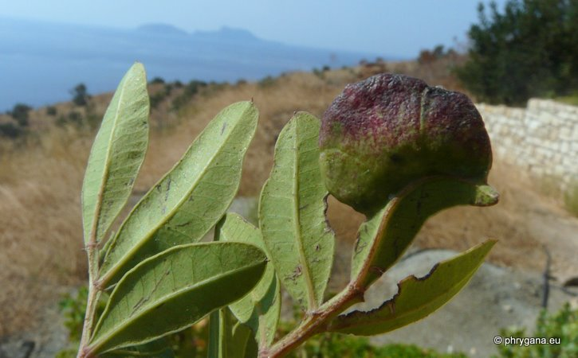
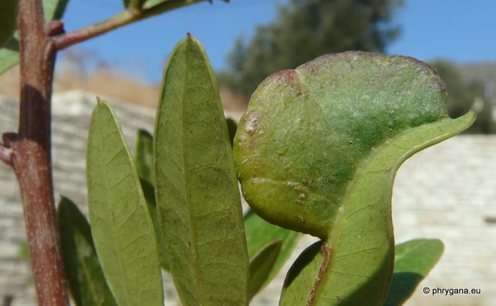
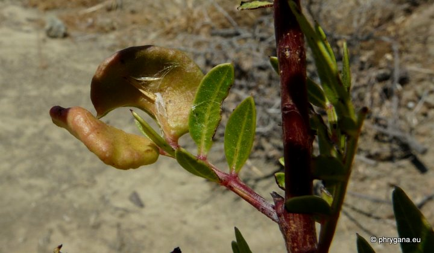

| PHRYGANA | Fauna | Flora | Galles | liste des espèces |
contact -
info - commentaires phrygana1 (at) gmail.com |
| Particularités crétoises | nouveautés | Mines | ressources naturelles |
| Aploneura lentisci (Passerini 1856) |
| 271 | Fauna | Sternorrhyncha | Aphididae cécidogènes | Aploneura Passerini 1856 |
|
 Aploneura lentisci Melambes (Agios Giorgos) 29 septembre 2011 |
| Galle en forme de poche plate, réniforme sur les feuilles et les jeunes pousses de Pistacia lentiscus L., la galle se développant sur la marge du limbe ou le bord du pétiole; les pucerons ailés quittent la poche fin septembre | |
| Taille petite: 1.5 -- 2.3 mm | |
| Espèce multivoltine suivant un cycle de deux ans: plusieurs générations sur les racines de Poaceae == une génération sur Pistacia lentiscus L. === retour aux racines de Poaceae et début d'un nouveau cycle | |
| Alimentation: opophagie (suceurs de sève) | |
| Période de vol: mars avril mai juin juillet août septembre octobre novembre | |
| Statut en Crète: indigène | |
| Biotopes en Crète: phrygana, garrigue, dunes. | |
| Distribution: région Méditerranéenne, Proche-Orient, Ukraine; introduit en Australie et en Nouvelle Zélande: cycle uniquement sur les racines de Poaceae | |
| --------------------------------------------------------------------------------------------------------------------------------------------------- | |
| Plante-hôte: Pistacia lentiscus | |
|
 Aploneura lentisci Melambes (Agios Giorgos) 29 septembre 2011 |
|
 Aploneura lentisci Melambes (Agios Giorgos) 16 août 2009 |
| 06 mars 2012 |
| © paul fontaine -- © Phrygana.eu 2007 -- 2013 |